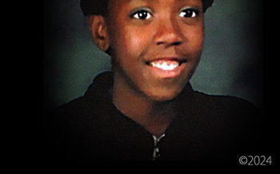
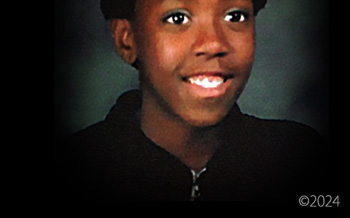

In 2006, I was arrested for the murder, kidnapping, and sex assault of six year old JonBenet Ramsey and extradited from Bangkok to Boulder Colorado. My arrest was based on my account of the night of her death that corroborated with physical evidence withheld from the public by the coroner and law enforcement from 1996 to 2006.
JonBenet Ramsey
Arrested for Her Murder in 2006


Being arrested in 2006 was what I had successfully avoided for 10 years since her death and for the 5 years of international running as a fugitive leading up to my 2006 arrest. The proof of that was the fact that I was in my 5th year of evading California authorities and the FBI when I was arrested against my will in 2006. I did not want fame for killing a child. The media arrived from all over the world and descended in on me against my will. Am I to be blamed for this? (Photo Designed by John Mark Karr) TAP TO VISIT THIS PAGE

"If John Ramsey can prove that his above accusation is true, it would establish knowledge of the victim well before the fact. It would also establish proximity to the victim well before the fact." ~ John Mark Karr (March 5th 2024)
Official Statements
Released Since 2016


Statements I have released since 2016 can be found on this page. When I have anything I consider important to say, I release a statement here. When and if I find out there are lies circulating about me in the media or I have something to say in response to other issues in the media related to me, I release those statements here. On rare occasions, I update statements which is indicated and dated. (Photo Designed by John Mark Karr) TAP TO VISIT THIS PAGE
On a rainy November night in 2001, I boarded a plane in San Francisco bound for London. I would remain out of America for five years until my 2006 arrest. My family thought me to be dead.
The First Arrest
Six Months Nationwide FBI Investigation


 

In 2001, I was arrested in Petaluma California. For six months, I languished in semi-solitary confinement while the FBI investigated me for the serial murder of little girls across America. (Photo Designed by John Mark Karr) TAP TO VISIT THIS PAGE
October 1st 2023 marked the thirtieth anniversary of the death of Polly Klaas. Let us all reflect on the life of this incredible young girl on this day of eternal mourning for all of us who loved her and will forever long for her presence.
Polly Hannah Klaas
The Disastrous Abduction that Killed Her


In 2019, a contact informed me that they were interviewed by the FBI for seven hours in 2006. They stated the interview was as much about Polly Klaas as JonBenet Ramsey. The FBI played numerous recorded calls from 2001 wherein I discussed Klaas in depth with an informant. The FBI stated that I had discussed details of Klaas with her killer in multiple conversations. I have a message for the FBI and Polly Klaas's killer in this October 2023 article. (Photo Designed by John Mark Karr) TAP TO VISIT THIS PAGE
On November 18th 1978, in Guyana South America, Jim Jones led 909 members of The People's Temple in the largest mass suicide in history. Nine others perished that day at the hands of Jones' loyal death squad. In the photo, Anthony Katsaris stands beside his sister, Maria Katsaris in Jonestown just before that fateful November 18th 1978 date that would claim the lives of 918 people. (San Francisco Examiner / UPI / Photography Designed by John Mark Karr)
Tale of Two Cults
The Cult Investigations


NEW ARTICLE: In 2007, I was investigated by the FBI for planning to organise a sex cult involving teenage girls. A computer containing the alleged plan was seized by the FBI. In 2010, nineteen year old Samantha Spiegel interviewed with mainstream media for two months wherein she said I was the leader of a sex cult. Her account was filled with stories of the sexual abuse of little girls and a death squad that would kill on my command. TAP TO VISIT THIS PAGE
Returning to 2006, after my release in Sonoma County California, I moved to Atlanta. In the months that followed in the same year, I was investigated by the Department of Homeland Security for international child sex trafficking, international child molestation and international murder of children. I was harassed by a neighborhood civic organization that sent out 2,000 letters to residents warning them of the threat - John Mark Karr. I was treated like a sex offender. I was harassed by hordes of law enforcement who would show up with lights flashing even for the mere sitting on a park bench overlooking a golf course in the middle of the day. My life was a living hell. I would not be able to remain in America for long.
Life Post 2006
My Life Would Never be the Same


In 2007, Seung Cho murdered 33 students at Virginia Tech. In his final manifesto, thought to be written during the killings, Cho mentioned me on page 16 stating, "You wanna rape us, John Mark Karrs? Fuck you!" My heart was broken when I heard about this. My fears were confirmed that mass murderers like Cho had me on their minds. I was reminded how very dangerous it was for me to remain in the U.S. (Photo Designed by John Mark Karr) TAP TO VISIT THIS PAGE
This photo was retrieved in 2006 from the Karr home in Alabama. The photo was scanned. The original print is long gone. This is the only published photo of John Mark Karr as a child.
John Mark Karr
Seven Years Old


On a blustery afternoon, after a long day in second grade, my grandmother took my brother and me to a small photo studio to have our pictures taken. I had a wonderful childhood, from the age of four and a half, when I arrived from Atlanta to live with my grandparents, in a beautiful countryside setting. (Photo Colorized and Designed by John Mark Karr)
Finally, brothers and sisters, whatsoever is true, whatsoever is noble, whatsoever is right, whatsoever is pure, whatsoever is lovely, whatsoever is admirable - if anything is excellent or praiseworthy, think about such things. (Philippians 4:8)
Princess Estelle
Swedish Royal Court
Eleventh Birthday Photograph


On 23 February 2024, Princess Estelle of Sweden turned 12 years old. This is her portrait from her 11th birthday. Estelle Silvia Ewa Mary, the Duchess of Östergötland, is the only daughter of Crown Princess Victoria and Prince Daniel. She is the grandchild of HM King Carl XVI Gustaf of Sweden and HM Queen Silvia of Sweden. (Linda Broström / Kungahuset / Photo Designed by John Mark Karr)